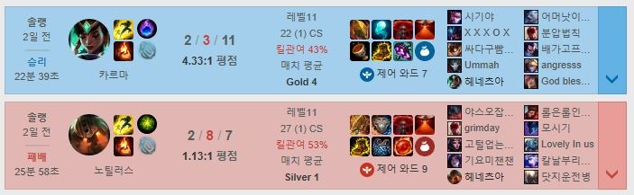
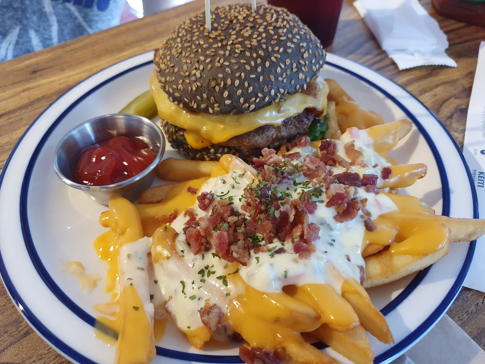

7월 13일
오늘은 5시에 일어났다. 최근에 5시에 자던걸 생각하면 매우 놀라운 일이다.왜 5시에 일어났냐면 어제 저녁 8시에 잤기 때문이다. 모르는 새에 자버렸다.
일어나니 할 것이 없어 롤을 켰다. 2판 했는데, 한판은 지고 한판은 이겼다.

두번째 판에 있는 "Ummah"이란 놈은 놀라운 놈이다. 이기는 상황에서 팀원 모두에게 패드립을 치던 놈이었다.
왜 플레이 시간이 2일전이라고 뜨냐면 이 일기는 사실 13일이 아닌 14일에 작성되고 있기 때문이다. 원래 일기는 몰아서 쓰는 것이 룰 아니겠는가?
어쨌든 아침에 상쾌하게 게임을 마치고 친구와의 스터디를 진행했다. 이번 시간에는 css를 배울 차례였다.
강의영상이 그림자료도 많고 재밌게 잘만들어서 참 볼맛이 난다. 참고로 난 생활코딩이라는 곳에서 배우고 있다.
끝날 때 지금까지 배웠던 것을 이용하여 간단하게 만들어보자고 했다. 그래서 이렇게 일기장을 작성하고 있는 것이다.
점심에 언니가 집 앞에 생긴 수제버거집에 가자고 꼬드겼다. 자기가 사주겠다고 하였다. 얼핏 들으면 "너네 언니 착하네" 그런 소리가 나올 수 있다.
하지만 나는 속지 않는다. 언니는 요즘 다이어트를 하고 있는데, 먹방이 이제 질리는지 라이브 먹방을 눈앞에서 보고 싶었던 것이 틀림없다.
나는 먹지 않겠다고 버텼으나 1시쯤 결국 굴복하고 말았다.

버거집 이름은 '제레미버거'이다. 간판은 JEREMY'S라고 되어있었다.
버거도 맛있었는데 감자튀김이 더 장난 아니었다. 진짜 맛있었다.
아쉬운 것은 감자튀김 위에 양파가 꽤 많았다는 것이다. 다음부터는 치즈 소스만 있는걸로 사야겠다.
또 버거 패티가 쉽게 부서지는게 아쉬웠다. 조금 더 쫄깃쫄깃한 식감이 있었으면 좋았을 것 같다.
집에 온 뒤에는 침대 위에서 계속 핸드폰을 했다. 6시에 과외때문에 집을 나섰다.
요즘 차가 너무 막혀서 일찍 출발했다. 저번에는 버스가 20분동안 거의 1km도 안되는 거리를 갔다. 그날은 늦고 말았다.
더이상 지각하면 학부모님 얼굴 보기가 무섭다. 그런데 놀랍게도 일찍 나오니 차가 별로 안막혔다...
최근 학생이 수업을 굉장히 어려워한다. 저번에는 아프다고 해서 일찍 끝냈는데, 내생각에는 반은 꾀병같다.
기말고사가 별로 안남았는데 참 걱정이다. 중간고사를 망했던데, 기말고사는 조금이라도 잘봤으면 좋겠다.
다행이게도 이번 수업은 순조롭게 끝냈다. 앞으로의 수업도 이랬으면 좋겠다.
집에 와서 또 침대에 드러누었다. 요즘 체력이 너무 없어서 매일매일 사이클을 돌리자고 다짐했는데, 작심삼일도 아닌 작심일일로 끝났다.
침대에서 핸드폰 좀 하다가 컴퓨터 앞에 앉았다. 롤을 좀 하다보니 사촌오빠한테서 같이 하자고 연락이 왔다.
연락 오기 직전의 판에서 벌레보다도 못했기 때문에 조심스러웠지만 캐리해준다는 오빠의 말때문에 같이 돌렸다.
놀랍게도 시작하자마자 팀원들은 사촌오빠한테 욕을 박기 시작했다. 이럴때 난감해진다. 우리는 어색한 분위기 속에서 게임을 계속 해나갔다.
욕을 많이 먹은 것 치고는 2판 모두 이겼다. 사촌 오빠는 "유나야 캐리 고맙다" 하고 머쓱하게 얘기했다.
게임을 끝내고 잘 준비를 했다. 오늘 영어 공부랑 사이클 다 안했는데 내일은 꼭 해야겠다며 다짐했다.